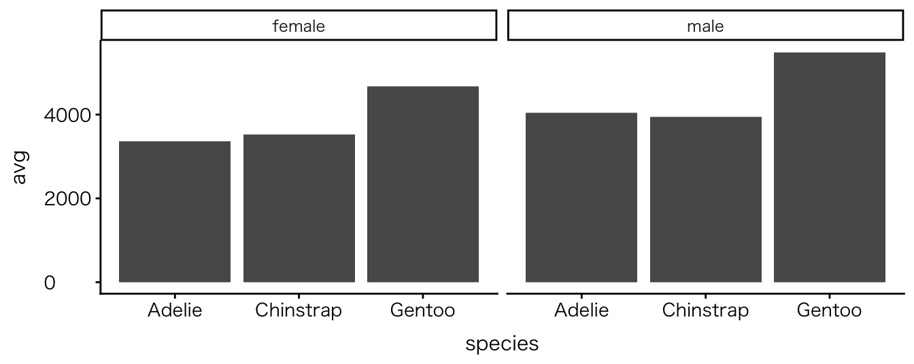

![]()
| species | island | bill_len | bill_dep | flipper_len | body_mass | sex | year |
|---|---|---|---|---|---|---|---|
| Adelie | Torgersen | 39.1 | 18.7 | 181 | 3750 | male | 2007 |
| Adelie | Torgersen | 39.5 | 17.4 | 186 | 3800 | female | 2007 |
| Adelie | Torgersen | 40.3 | 18.0 | 195 | 3250 | female | 2007 |
RとQuartoではじめるデータサイエンス
#2 Rの基本的な操作方法(1)
April 15, 2026
0. 本日の目標
本日の目標
- データセットの基本的な構造（行・列・変数）を理解する
- データの型（数値・文字・文字など）の違いをなんとなく理解する
- データを抽出・選択する基本的な操作を行ってみる
- データを簡単に計算し、その結果を図にしてみる（詳しい説明、理解は次週以降）
- 生成AIを補助ツールとして活用する可能性と注意点をなんとなく理解する
Ⅰ. データセットの構造と型
データセットとは何か
- データセット = データを表の形でまとめたもの
Excelのシートとの相違点
- 空白行は入れない
- 空白セルは基本的に作らない
- 空白セルは欠損値
- セルの結合はしない
Excelでやりがちなこと
- 見やすくするための空白行挿入
- セルを結合する
- 見出しを2段にする
- データ分析ではすべてNG
a
データセットの構造（行と列）
- 行（row）: 1つの観測（例：1羽のペンギン）
- 列（column）: 1つの変数（例：体重・種類）
| species | island | bill_len | bill_dep | flipper_len | body_mass | sex | year |
|---|---|---|---|---|---|---|---|
| Adelie | Torgersen | 39.1 | 18.7 | 181 | 3750 | male | 2007 |
| Adelie | Torgersen | 39.5 | 17.4 | 186 | 3800 | female | 2007 |
| Adelie | Torgersen | 40.3 | 18.0 | 195 | 3250 | female | 2007 |
Note |
- 行が増える = データが増える
- 列が増える = 情報の種類が増える
変数とは何か
- 列 = 変数（variable）
例
- 体重：数値の変数
- 計算できる
- 種類：カテゴリの変数
- 種別できる
👉 重要な考え方
- 「何を測っているか」が変数
- 変数の意味を理解することが出発点
データの型（type）
- データには種類（型）がある
- 数値（numeric）：体重、身長など
- 文字（character）：名前など
- カテゴリ（factor）：種類、性別など
- 日付・時刻（date / datetime）：日付や時間（特別な型）
- 型によって「できる操作」が異なる
- 数値：計算に向いている
- 文字：分類に向いている
- カテゴリ：分類に使われるデータ（順序を持つこともある）
データの型（type）を確認しよう
- skim()関数を使用
- base R や tidyverseには含まれていないため、追加パッケージが必要
- install.packageで’skimr’パッケージをダウンロード
- Setup Chunkにパッケージを追加
- 以下のコードを実行
- skim_typeを確認
| skim_type | skim_variable | n_missing | complete_rate | factor.ordered | factor.n_unique | factor.top_counts | numeric.mean | numeric.sd | numeric.p0 | numeric.p25 | numeric.p50 | numeric.p75 | numeric.p100 | numeric.hist |
|---|---|---|---|---|---|---|---|---|---|---|---|---|---|---|
| factor | species | 0 | 1.0000000 | FALSE | 3 | Ade: 152, Gen: 124, Chi: 68 | NA | NA | NA | NA | NA | NA | NA | NA |
| factor | island | 0 | 1.0000000 | FALSE | 3 | Bis: 168, Dre: 124, Tor: 52 | NA | NA | NA | NA | NA | NA | NA | NA |
| factor | sex | 11 | 0.9680233 | FALSE | 2 | mal: 168, fem: 165 | NA | NA | NA | NA | NA | NA | NA | NA |
| numeric | bill_len | 2 | 0.9941860 | NA | NA | NA | 43.92193 | 5.4595837 | 32.1 | 39.225 | 44.45 | 48.5 | 59.6 | ▃▇▇▆▁ |
| numeric | bill_dep | 2 | 0.9941860 | NA | NA | NA | 17.15117 | 1.9747932 | 13.1 | 15.600 | 17.30 | 18.7 | 21.5 | ▅▅▇▇▂ |
| numeric | flipper_len | 2 | 0.9941860 | NA | NA | NA | 200.91520 | 14.0617137 | 172.0 | 190.000 | 197.00 | 213.0 | 231.0 | ▂▇▃▅▂ |
| numeric | body_mass | 2 | 0.9941860 | NA | NA | NA | 4201.75439 | 801.9545357 | 2700.0 | 3550.000 | 4050.00 | 4750.0 | 6300.0 | ▃▇▆▃▂ |
| numeric | year | 0 | 1.0000000 | NA | NA | NA | 2008.02907 | 0.8183559 | 2007.0 | 2007.000 | 2008.00 | 2009.0 | 2009.0 | ▇▁▇▁▇ |
パッケージのインストール、読み込み方法を忘れた人は、前回の教材を参照しましょう
データの型（type）を確認しよう
skim()関数の利点
- データの特徴を一度に把握できる
- 型（numeric / character など）
- NA（欠損値）の有無
- 数値の大まかな大きさ（平均・最小・最大など）
Cf. base R関数場合
a
• データの「構造」と「型」を確認できる👉 見るポイント • 各列の名前 • 数値か文字か
👉 完全に理解しなくてOK → 「こうやって確認できるんだな」で十分
⑴ 試行錯誤の大切さ
試行錯誤を始めるときに、2つの点を心に留めてください。1つ目は、何かを試すことには常に価値があるということです。たとえその結果何が起こるか完全にはわかっていなかったとしてもです。コンソールを怖がってはいけません。コードを使ってグラフを作るすばらしい点は、いったん壊したら元に戻せないような操作が含まれていないことです。もし何かがうまくいかなかったら、何が起きているかを特定し、それを修正し、そして作図コードをもう一度実行すればよいのです。
2つ目の点は、ggplotを使った作業の主な流れはいつも同じだということです。それは、テーブル型のデータから始め、位置・色・形といったグラフに表示される審美的要素に当たる変数をマップし、そしてグラフを描画するために1つか2つのgeom_関数を選ぶ、という流れです。コードの上ではこの流れは、まずデータとマッピングに関する基礎的な情報を持ったオブジェクトを作り、そこに必要な情報を重ねたり加えたりする というプロセスで実装されます。この作図法を一度身につけてしまえば、特に審美的要素のマッピングの指定とその継承方法が重要ですが、図を作るのが簡単になります（ヒーリー，キーラン (2021), 124ページ）。
0. データを切り出す操作
データを切り出す操作
- slice()関数
- filter()関数
- filter_out()関数
- select()関数
データを絞り込む
- filter()：指定した変数のデータのみ残す
- filter_out()：指定した変数のデータを除外する
| species | island | bill_len | bill_dep | flipper_len | body_mass | sex | year |
|---|---|---|---|---|---|---|---|
| Adelie | Torgersen | 39.1 | 18.7 | 181 | 3750 | male | 2007 |
| Adelie | Torgersen | 39.5 | 17.4 | 186 | 3800 | female | 2007 |
| Adelie | Torgersen | 40.3 | 18.0 | 195 | 3250 | female | 2007 |
| Adelie | Torgersen | NA | NA | NA | NA | NA | 2007 |
| Adelie | Torgersen | 36.7 | 19.3 | 193 | 3450 | female | 2007 |
| Adelie | Torgersen | 39.3 | 20.6 | 190 | 3650 | male | 2007 |
| Adelie | Torgersen | 38.9 | 17.8 | 181 | 3625 | female | 2007 |
| Adelie | Torgersen | 39.2 | 19.6 | 195 | 4675 | male | 2007 |
| Adelie | Torgersen | 34.1 | 18.1 | 193 | 3475 | NA | 2007 |
| Adelie | Torgersen | 42.0 | 20.2 | 190 | 4250 | NA | 2007 |
| Adelie | Torgersen | 37.8 | 17.1 | 186 | 3300 | NA | 2007 |
| Adelie | Torgersen | 37.8 | 17.3 | 180 | 3700 | NA | 2007 |
| Adelie | Torgersen | 41.1 | 17.6 | 182 | 3200 | female | 2007 |
| Adelie | Torgersen | 38.6 | 21.2 | 191 | 3800 | male | 2007 |
| Adelie | Torgersen | 34.6 | 21.1 | 198 | 4400 | male | 2007 |
| Adelie | Torgersen | 36.6 | 17.8 | 185 | 3700 | female | 2007 |
| Adelie | Torgersen | 38.7 | 19.0 | 195 | 3450 | female | 2007 |
| Adelie | Torgersen | 42.5 | 20.7 | 197 | 4500 | male | 2007 |
| Adelie | Torgersen | 34.4 | 18.4 | 184 | 3325 | female | 2007 |
| Adelie | Torgersen | 46.0 | 21.5 | 194 | 4200 | male | 2007 |
| Adelie | Biscoe | 37.8 | 18.3 | 174 | 3400 | female | 2007 |
| Adelie | Biscoe | 37.7 | 18.7 | 180 | 3600 | male | 2007 |
| Adelie | Biscoe | 35.9 | 19.2 | 189 | 3800 | female | 2007 |
| Adelie | Biscoe | 38.2 | 18.1 | 185 | 3950 | male | 2007 |
| Adelie | Biscoe | 38.8 | 17.2 | 180 | 3800 | male | 2007 |
| Adelie | Biscoe | 35.3 | 18.9 | 187 | 3800 | female | 2007 |
| Adelie | Biscoe | 40.6 | 18.6 | 183 | 3550 | male | 2007 |
| Adelie | Biscoe | 40.5 | 17.9 | 187 | 3200 | female | 2007 |
| Adelie | Biscoe | 37.9 | 18.6 | 172 | 3150 | female | 2007 |
| Adelie | Biscoe | 40.5 | 18.9 | 180 | 3950 | male | 2007 |
| Adelie | Dream | 39.5 | 16.7 | 178 | 3250 | female | 2007 |
| Adelie | Dream | 37.2 | 18.1 | 178 | 3900 | male | 2007 |
| Adelie | Dream | 39.5 | 17.8 | 188 | 3300 | female | 2007 |
| Adelie | Dream | 40.9 | 18.9 | 184 | 3900 | male | 2007 |
| Adelie | Dream | 36.4 | 17.0 | 195 | 3325 | female | 2007 |
| Adelie | Dream | 39.2 | 21.1 | 196 | 4150 | male | 2007 |
| Adelie | Dream | 38.8 | 20.0 | 190 | 3950 | male | 2007 |
| Adelie | Dream | 42.2 | 18.5 | 180 | 3550 | female | 2007 |
| Adelie | Dream | 37.6 | 19.3 | 181 | 3300 | female | 2007 |
| Adelie | Dream | 39.8 | 19.1 | 184 | 4650 | male | 2007 |
| Adelie | Dream | 36.5 | 18.0 | 182 | 3150 | female | 2007 |
| Adelie | Dream | 40.8 | 18.4 | 195 | 3900 | male | 2007 |
| Adelie | Dream | 36.0 | 18.5 | 186 | 3100 | female | 2007 |
| Adelie | Dream | 44.1 | 19.7 | 196 | 4400 | male | 2007 |
| Adelie | Dream | 37.0 | 16.9 | 185 | 3000 | female | 2007 |
| Adelie | Dream | 39.6 | 18.8 | 190 | 4600 | male | 2007 |
| Adelie | Dream | 41.1 | 19.0 | 182 | 3425 | male | 2007 |
| Adelie | Dream | 37.5 | 18.9 | 179 | 2975 | NA | 2007 |
| Adelie | Dream | 36.0 | 17.9 | 190 | 3450 | female | 2007 |
| Adelie | Dream | 42.3 | 21.2 | 191 | 4150 | male | 2007 |
| Adelie | Biscoe | 39.6 | 17.7 | 186 | 3500 | female | 2008 |
| Adelie | Biscoe | 40.1 | 18.9 | 188 | 4300 | male | 2008 |
| Adelie | Biscoe | 35.0 | 17.9 | 190 | 3450 | female | 2008 |
| Adelie | Biscoe | 42.0 | 19.5 | 200 | 4050 | male | 2008 |
| Adelie | Biscoe | 34.5 | 18.1 | 187 | 2900 | female | 2008 |
| Adelie | Biscoe | 41.4 | 18.6 | 191 | 3700 | male | 2008 |
| Adelie | Biscoe | 39.0 | 17.5 | 186 | 3550 | female | 2008 |
| Adelie | Biscoe | 40.6 | 18.8 | 193 | 3800 | male | 2008 |
| Adelie | Biscoe | 36.5 | 16.6 | 181 | 2850 | female | 2008 |
| Adelie | Biscoe | 37.6 | 19.1 | 194 | 3750 | male | 2008 |
| Adelie | Biscoe | 35.7 | 16.9 | 185 | 3150 | female | 2008 |
| Adelie | Biscoe | 41.3 | 21.1 | 195 | 4400 | male | 2008 |
| Adelie | Biscoe | 37.6 | 17.0 | 185 | 3600 | female | 2008 |
| Adelie | Biscoe | 41.1 | 18.2 | 192 | 4050 | male | 2008 |
| Adelie | Biscoe | 36.4 | 17.1 | 184 | 2850 | female | 2008 |
| Adelie | Biscoe | 41.6 | 18.0 | 192 | 3950 | male | 2008 |
| Adelie | Biscoe | 35.5 | 16.2 | 195 | 3350 | female | 2008 |
| Adelie | Biscoe | 41.1 | 19.1 | 188 | 4100 | male | 2008 |
| Adelie | Torgersen | 35.9 | 16.6 | 190 | 3050 | female | 2008 |
| Adelie | Torgersen | 41.8 | 19.4 | 198 | 4450 | male | 2008 |
| Adelie | Torgersen | 33.5 | 19.0 | 190 | 3600 | female | 2008 |
| Adelie | Torgersen | 39.7 | 18.4 | 190 | 3900 | male | 2008 |
| Adelie | Torgersen | 39.6 | 17.2 | 196 | 3550 | female | 2008 |
| Adelie | Torgersen | 45.8 | 18.9 | 197 | 4150 | male | 2008 |
| Adelie | Torgersen | 35.5 | 17.5 | 190 | 3700 | female | 2008 |
| Adelie | Torgersen | 42.8 | 18.5 | 195 | 4250 | male | 2008 |
| Adelie | Torgersen | 40.9 | 16.8 | 191 | 3700 | female | 2008 |
| Adelie | Torgersen | 37.2 | 19.4 | 184 | 3900 | male | 2008 |
| Adelie | Torgersen | 36.2 | 16.1 | 187 | 3550 | female | 2008 |
| Adelie | Torgersen | 42.1 | 19.1 | 195 | 4000 | male | 2008 |
| Adelie | Torgersen | 34.6 | 17.2 | 189 | 3200 | female | 2008 |
| Adelie | Torgersen | 42.9 | 17.6 | 196 | 4700 | male | 2008 |
| Adelie | Torgersen | 36.7 | 18.8 | 187 | 3800 | female | 2008 |
| Adelie | Torgersen | 35.1 | 19.4 | 193 | 4200 | male | 2008 |
| Adelie | Dream | 37.3 | 17.8 | 191 | 3350 | female | 2008 |
| Adelie | Dream | 41.3 | 20.3 | 194 | 3550 | male | 2008 |
| Adelie | Dream | 36.3 | 19.5 | 190 | 3800 | male | 2008 |
| Adelie | Dream | 36.9 | 18.6 | 189 | 3500 | female | 2008 |
| Adelie | Dream | 38.3 | 19.2 | 189 | 3950 | male | 2008 |
| Adelie | Dream | 38.9 | 18.8 | 190 | 3600 | female | 2008 |
| Adelie | Dream | 35.7 | 18.0 | 202 | 3550 | female | 2008 |
| Adelie | Dream | 41.1 | 18.1 | 205 | 4300 | male | 2008 |
| Adelie | Dream | 34.0 | 17.1 | 185 | 3400 | female | 2008 |
| Adelie | Dream | 39.6 | 18.1 | 186 | 4450 | male | 2008 |
| Adelie | Dream | 36.2 | 17.3 | 187 | 3300 | female | 2008 |
| Adelie | Dream | 40.8 | 18.9 | 208 | 4300 | male | 2008 |
| Adelie | Dream | 38.1 | 18.6 | 190 | 3700 | female | 2008 |
| Adelie | Dream | 40.3 | 18.5 | 196 | 4350 | male | 2008 |
| Adelie | Dream | 33.1 | 16.1 | 178 | 2900 | female | 2008 |
| Adelie | Dream | 43.2 | 18.5 | 192 | 4100 | male | 2008 |
| Adelie | Biscoe | 35.0 | 17.9 | 192 | 3725 | female | 2009 |
| Adelie | Biscoe | 41.0 | 20.0 | 203 | 4725 | male | 2009 |
| Adelie | Biscoe | 37.7 | 16.0 | 183 | 3075 | female | 2009 |
| Adelie | Biscoe | 37.8 | 20.0 | 190 | 4250 | male | 2009 |
| Adelie | Biscoe | 37.9 | 18.6 | 193 | 2925 | female | 2009 |
| Adelie | Biscoe | 39.7 | 18.9 | 184 | 3550 | male | 2009 |
| Adelie | Biscoe | 38.6 | 17.2 | 199 | 3750 | female | 2009 |
| Adelie | Biscoe | 38.2 | 20.0 | 190 | 3900 | male | 2009 |
| Adelie | Biscoe | 38.1 | 17.0 | 181 | 3175 | female | 2009 |
| Adelie | Biscoe | 43.2 | 19.0 | 197 | 4775 | male | 2009 |
| Adelie | Biscoe | 38.1 | 16.5 | 198 | 3825 | female | 2009 |
| Adelie | Biscoe | 45.6 | 20.3 | 191 | 4600 | male | 2009 |
| Adelie | Biscoe | 39.7 | 17.7 | 193 | 3200 | female | 2009 |
| Adelie | Biscoe | 42.2 | 19.5 | 197 | 4275 | male | 2009 |
| Adelie | Biscoe | 39.6 | 20.7 | 191 | 3900 | female | 2009 |
| Adelie | Biscoe | 42.7 | 18.3 | 196 | 4075 | male | 2009 |
| Adelie | Torgersen | 38.6 | 17.0 | 188 | 2900 | female | 2009 |
| Adelie | Torgersen | 37.3 | 20.5 | 199 | 3775 | male | 2009 |
| Adelie | Torgersen | 35.7 | 17.0 | 189 | 3350 | female | 2009 |
| Adelie | Torgersen | 41.1 | 18.6 | 189 | 3325 | male | 2009 |
| Adelie | Torgersen | 36.2 | 17.2 | 187 | 3150 | female | 2009 |
| Adelie | Torgersen | 37.7 | 19.8 | 198 | 3500 | male | 2009 |
| Adelie | Torgersen | 40.2 | 17.0 | 176 | 3450 | female | 2009 |
| Adelie | Torgersen | 41.4 | 18.5 | 202 | 3875 | male | 2009 |
| Adelie | Torgersen | 35.2 | 15.9 | 186 | 3050 | female | 2009 |
| Adelie | Torgersen | 40.6 | 19.0 | 199 | 4000 | male | 2009 |
| Adelie | Torgersen | 38.8 | 17.6 | 191 | 3275 | female | 2009 |
| Adelie | Torgersen | 41.5 | 18.3 | 195 | 4300 | male | 2009 |
| Adelie | Torgersen | 39.0 | 17.1 | 191 | 3050 | female | 2009 |
| Adelie | Torgersen | 44.1 | 18.0 | 210 | 4000 | male | 2009 |
| Adelie | Torgersen | 38.5 | 17.9 | 190 | 3325 | female | 2009 |
| Adelie | Torgersen | 43.1 | 19.2 | 197 | 3500 | male | 2009 |
| Adelie | Dream | 36.8 | 18.5 | 193 | 3500 | female | 2009 |
| Adelie | Dream | 37.5 | 18.5 | 199 | 4475 | male | 2009 |
| Adelie | Dream | 38.1 | 17.6 | 187 | 3425 | female | 2009 |
| Adelie | Dream | 41.1 | 17.5 | 190 | 3900 | male | 2009 |
| Adelie | Dream | 35.6 | 17.5 | 191 | 3175 | female | 2009 |
| Adelie | Dream | 40.2 | 20.1 | 200 | 3975 | male | 2009 |
| Adelie | Dream | 37.0 | 16.5 | 185 | 3400 | female | 2009 |
| Adelie | Dream | 39.7 | 17.9 | 193 | 4250 | male | 2009 |
| Adelie | Dream | 40.2 | 17.1 | 193 | 3400 | female | 2009 |
| Adelie | Dream | 40.6 | 17.2 | 187 | 3475 | male | 2009 |
| Adelie | Dream | 32.1 | 15.5 | 188 | 3050 | female | 2009 |
| Adelie | Dream | 40.7 | 17.0 | 190 | 3725 | male | 2009 |
| Adelie | Dream | 37.3 | 16.8 | 192 | 3000 | female | 2009 |
| Adelie | Dream | 39.0 | 18.7 | 185 | 3650 | male | 2009 |
| Adelie | Dream | 39.2 | 18.6 | 190 | 4250 | male | 2009 |
| Adelie | Dream | 36.6 | 18.4 | 184 | 3475 | female | 2009 |
| Adelie | Dream | 36.0 | 17.8 | 195 | 3450 | female | 2009 |
| Adelie | Dream | 37.8 | 18.1 | 193 | 3750 | male | 2009 |
| Adelie | Dream | 36.0 | 17.1 | 187 | 3700 | female | 2009 |
| Adelie | Dream | 41.5 | 18.5 | 201 | 4000 | male | 2009 |
| species | island | bill_len | bill_dep | flipper_len | body_mass | sex | year |
|---|---|---|---|---|---|---|---|
| Gentoo | Biscoe | 46.1 | 13.2 | 211 | 4500 | female | 2007 |
| Gentoo | Biscoe | 50.0 | 16.3 | 230 | 5700 | male | 2007 |
| Gentoo | Biscoe | 48.7 | 14.1 | 210 | 4450 | female | 2007 |
| Gentoo | Biscoe | 50.0 | 15.2 | 218 | 5700 | male | 2007 |
| Gentoo | Biscoe | 47.6 | 14.5 | 215 | 5400 | male | 2007 |
| Gentoo | Biscoe | 46.5 | 13.5 | 210 | 4550 | female | 2007 |
| Gentoo | Biscoe | 45.4 | 14.6 | 211 | 4800 | female | 2007 |
| Gentoo | Biscoe | 46.7 | 15.3 | 219 | 5200 | male | 2007 |
| Gentoo | Biscoe | 43.3 | 13.4 | 209 | 4400 | female | 2007 |
| Gentoo | Biscoe | 46.8 | 15.4 | 215 | 5150 | male | 2007 |
| Gentoo | Biscoe | 40.9 | 13.7 | 214 | 4650 | female | 2007 |
| Gentoo | Biscoe | 49.0 | 16.1 | 216 | 5550 | male | 2007 |
| Gentoo | Biscoe | 45.5 | 13.7 | 214 | 4650 | female | 2007 |
| Gentoo | Biscoe | 48.4 | 14.6 | 213 | 5850 | male | 2007 |
| Gentoo | Biscoe | 45.8 | 14.6 | 210 | 4200 | female | 2007 |
| Gentoo | Biscoe | 49.3 | 15.7 | 217 | 5850 | male | 2007 |
| Gentoo | Biscoe | 42.0 | 13.5 | 210 | 4150 | female | 2007 |
| Gentoo | Biscoe | 49.2 | 15.2 | 221 | 6300 | male | 2007 |
| Gentoo | Biscoe | 46.2 | 14.5 | 209 | 4800 | female | 2007 |
| Gentoo | Biscoe | 48.7 | 15.1 | 222 | 5350 | male | 2007 |
| Gentoo | Biscoe | 50.2 | 14.3 | 218 | 5700 | male | 2007 |
| Gentoo | Biscoe | 45.1 | 14.5 | 215 | 5000 | female | 2007 |
| Gentoo | Biscoe | 46.5 | 14.5 | 213 | 4400 | female | 2007 |
| Gentoo | Biscoe | 46.3 | 15.8 | 215 | 5050 | male | 2007 |
| Gentoo | Biscoe | 42.9 | 13.1 | 215 | 5000 | female | 2007 |
| Gentoo | Biscoe | 46.1 | 15.1 | 215 | 5100 | male | 2007 |
| Gentoo | Biscoe | 44.5 | 14.3 | 216 | 4100 | NA | 2007 |
| Gentoo | Biscoe | 47.8 | 15.0 | 215 | 5650 | male | 2007 |
| Gentoo | Biscoe | 48.2 | 14.3 | 210 | 4600 | female | 2007 |
| Gentoo | Biscoe | 50.0 | 15.3 | 220 | 5550 | male | 2007 |
| Gentoo | Biscoe | 47.3 | 15.3 | 222 | 5250 | male | 2007 |
| Gentoo | Biscoe | 42.8 | 14.2 | 209 | 4700 | female | 2007 |
| Gentoo | Biscoe | 45.1 | 14.5 | 207 | 5050 | female | 2007 |
| Gentoo | Biscoe | 59.6 | 17.0 | 230 | 6050 | male | 2007 |
| Gentoo | Biscoe | 49.1 | 14.8 | 220 | 5150 | female | 2008 |
| Gentoo | Biscoe | 48.4 | 16.3 | 220 | 5400 | male | 2008 |
| Gentoo | Biscoe | 42.6 | 13.7 | 213 | 4950 | female | 2008 |
| Gentoo | Biscoe | 44.4 | 17.3 | 219 | 5250 | male | 2008 |
| Gentoo | Biscoe | 44.0 | 13.6 | 208 | 4350 | female | 2008 |
| Gentoo | Biscoe | 48.7 | 15.7 | 208 | 5350 | male | 2008 |
| Gentoo | Biscoe | 42.7 | 13.7 | 208 | 3950 | female | 2008 |
| Gentoo | Biscoe | 49.6 | 16.0 | 225 | 5700 | male | 2008 |
| Gentoo | Biscoe | 45.3 | 13.7 | 210 | 4300 | female | 2008 |
| Gentoo | Biscoe | 49.6 | 15.0 | 216 | 4750 | male | 2008 |
| Gentoo | Biscoe | 50.5 | 15.9 | 222 | 5550 | male | 2008 |
| Gentoo | Biscoe | 43.6 | 13.9 | 217 | 4900 | female | 2008 |
| Gentoo | Biscoe | 45.5 | 13.9 | 210 | 4200 | female | 2008 |
| Gentoo | Biscoe | 50.5 | 15.9 | 225 | 5400 | male | 2008 |
| Gentoo | Biscoe | 44.9 | 13.3 | 213 | 5100 | female | 2008 |
| Gentoo | Biscoe | 45.2 | 15.8 | 215 | 5300 | male | 2008 |
| Gentoo | Biscoe | 46.6 | 14.2 | 210 | 4850 | female | 2008 |
| Gentoo | Biscoe | 48.5 | 14.1 | 220 | 5300 | male | 2008 |
| Gentoo | Biscoe | 45.1 | 14.4 | 210 | 4400 | female | 2008 |
| Gentoo | Biscoe | 50.1 | 15.0 | 225 | 5000 | male | 2008 |
| Gentoo | Biscoe | 46.5 | 14.4 | 217 | 4900 | female | 2008 |
| Gentoo | Biscoe | 45.0 | 15.4 | 220 | 5050 | male | 2008 |
| Gentoo | Biscoe | 43.8 | 13.9 | 208 | 4300 | female | 2008 |
| Gentoo | Biscoe | 45.5 | 15.0 | 220 | 5000 | male | 2008 |
| Gentoo | Biscoe | 43.2 | 14.5 | 208 | 4450 | female | 2008 |
| Gentoo | Biscoe | 50.4 | 15.3 | 224 | 5550 | male | 2008 |
| Gentoo | Biscoe | 45.3 | 13.8 | 208 | 4200 | female | 2008 |
| Gentoo | Biscoe | 46.2 | 14.9 | 221 | 5300 | male | 2008 |
| Gentoo | Biscoe | 45.7 | 13.9 | 214 | 4400 | female | 2008 |
| Gentoo | Biscoe | 54.3 | 15.7 | 231 | 5650 | male | 2008 |
| Gentoo | Biscoe | 45.8 | 14.2 | 219 | 4700 | female | 2008 |
| Gentoo | Biscoe | 49.8 | 16.8 | 230 | 5700 | male | 2008 |
| Gentoo | Biscoe | 46.2 | 14.4 | 214 | 4650 | NA | 2008 |
| Gentoo | Biscoe | 49.5 | 16.2 | 229 | 5800 | male | 2008 |
| Gentoo | Biscoe | 43.5 | 14.2 | 220 | 4700 | female | 2008 |
| Gentoo | Biscoe | 50.7 | 15.0 | 223 | 5550 | male | 2008 |
| Gentoo | Biscoe | 47.7 | 15.0 | 216 | 4750 | female | 2008 |
| Gentoo | Biscoe | 46.4 | 15.6 | 221 | 5000 | male | 2008 |
| Gentoo | Biscoe | 48.2 | 15.6 | 221 | 5100 | male | 2008 |
| Gentoo | Biscoe | 46.5 | 14.8 | 217 | 5200 | female | 2008 |
| Gentoo | Biscoe | 46.4 | 15.0 | 216 | 4700 | female | 2008 |
| Gentoo | Biscoe | 48.6 | 16.0 | 230 | 5800 | male | 2008 |
| Gentoo | Biscoe | 47.5 | 14.2 | 209 | 4600 | female | 2008 |
| Gentoo | Biscoe | 51.1 | 16.3 | 220 | 6000 | male | 2008 |
| Gentoo | Biscoe | 45.2 | 13.8 | 215 | 4750 | female | 2008 |
| Gentoo | Biscoe | 45.2 | 16.4 | 223 | 5950 | male | 2008 |
| Gentoo | Biscoe | 49.1 | 14.5 | 212 | 4625 | female | 2009 |
| Gentoo | Biscoe | 52.5 | 15.6 | 221 | 5450 | male | 2009 |
| Gentoo | Biscoe | 47.4 | 14.6 | 212 | 4725 | female | 2009 |
| Gentoo | Biscoe | 50.0 | 15.9 | 224 | 5350 | male | 2009 |
| Gentoo | Biscoe | 44.9 | 13.8 | 212 | 4750 | female | 2009 |
| Gentoo | Biscoe | 50.8 | 17.3 | 228 | 5600 | male | 2009 |
| Gentoo | Biscoe | 43.4 | 14.4 | 218 | 4600 | female | 2009 |
| Gentoo | Biscoe | 51.3 | 14.2 | 218 | 5300 | male | 2009 |
| Gentoo | Biscoe | 47.5 | 14.0 | 212 | 4875 | female | 2009 |
| Gentoo | Biscoe | 52.1 | 17.0 | 230 | 5550 | male | 2009 |
| Gentoo | Biscoe | 47.5 | 15.0 | 218 | 4950 | female | 2009 |
| Gentoo | Biscoe | 52.2 | 17.1 | 228 | 5400 | male | 2009 |
| Gentoo | Biscoe | 45.5 | 14.5 | 212 | 4750 | female | 2009 |
| Gentoo | Biscoe | 49.5 | 16.1 | 224 | 5650 | male | 2009 |
| Gentoo | Biscoe | 44.5 | 14.7 | 214 | 4850 | female | 2009 |
| Gentoo | Biscoe | 50.8 | 15.7 | 226 | 5200 | male | 2009 |
| Gentoo | Biscoe | 49.4 | 15.8 | 216 | 4925 | male | 2009 |
| Gentoo | Biscoe | 46.9 | 14.6 | 222 | 4875 | female | 2009 |
| Gentoo | Biscoe | 48.4 | 14.4 | 203 | 4625 | female | 2009 |
| Gentoo | Biscoe | 51.1 | 16.5 | 225 | 5250 | male | 2009 |
| Gentoo | Biscoe | 48.5 | 15.0 | 219 | 4850 | female | 2009 |
| Gentoo | Biscoe | 55.9 | 17.0 | 228 | 5600 | male | 2009 |
| Gentoo | Biscoe | 47.2 | 15.5 | 215 | 4975 | female | 2009 |
| Gentoo | Biscoe | 49.1 | 15.0 | 228 | 5500 | male | 2009 |
| Gentoo | Biscoe | 47.3 | 13.8 | 216 | 4725 | NA | 2009 |
| Gentoo | Biscoe | 46.8 | 16.1 | 215 | 5500 | male | 2009 |
| Gentoo | Biscoe | 41.7 | 14.7 | 210 | 4700 | female | 2009 |
| Gentoo | Biscoe | 53.4 | 15.8 | 219 | 5500 | male | 2009 |
| Gentoo | Biscoe | 43.3 | 14.0 | 208 | 4575 | female | 2009 |
| Gentoo | Biscoe | 48.1 | 15.1 | 209 | 5500 | male | 2009 |
| Gentoo | Biscoe | 50.5 | 15.2 | 216 | 5000 | female | 2009 |
| Gentoo | Biscoe | 49.8 | 15.9 | 229 | 5950 | male | 2009 |
| Gentoo | Biscoe | 43.5 | 15.2 | 213 | 4650 | female | 2009 |
| Gentoo | Biscoe | 51.5 | 16.3 | 230 | 5500 | male | 2009 |
| Gentoo | Biscoe | 46.2 | 14.1 | 217 | 4375 | female | 2009 |
| Gentoo | Biscoe | 55.1 | 16.0 | 230 | 5850 | male | 2009 |
| Gentoo | Biscoe | 44.5 | 15.7 | 217 | 4875 | NA | 2009 |
| Gentoo | Biscoe | 48.8 | 16.2 | 222 | 6000 | male | 2009 |
| Gentoo | Biscoe | 47.2 | 13.7 | 214 | 4925 | female | 2009 |
| Gentoo | Biscoe | NA | NA | NA | NA | NA | 2009 |
| Gentoo | Biscoe | 46.8 | 14.3 | 215 | 4850 | female | 2009 |
| Gentoo | Biscoe | 50.4 | 15.7 | 222 | 5750 | male | 2009 |
| Gentoo | Biscoe | 45.2 | 14.8 | 212 | 5200 | female | 2009 |
| Gentoo | Biscoe | 49.9 | 16.1 | 213 | 5400 | male | 2009 |
| Chinstrap | Dream | 46.5 | 17.9 | 192 | 3500 | female | 2007 |
| Chinstrap | Dream | 50.0 | 19.5 | 196 | 3900 | male | 2007 |
| Chinstrap | Dream | 51.3 | 19.2 | 193 | 3650 | male | 2007 |
| Chinstrap | Dream | 45.4 | 18.7 | 188 | 3525 | female | 2007 |
| Chinstrap | Dream | 52.7 | 19.8 | 197 | 3725 | male | 2007 |
| Chinstrap | Dream | 45.2 | 17.8 | 198 | 3950 | female | 2007 |
| Chinstrap | Dream | 46.1 | 18.2 | 178 | 3250 | female | 2007 |
| Chinstrap | Dream | 51.3 | 18.2 | 197 | 3750 | male | 2007 |
| Chinstrap | Dream | 46.0 | 18.9 | 195 | 4150 | female | 2007 |
| Chinstrap | Dream | 51.3 | 19.9 | 198 | 3700 | male | 2007 |
| Chinstrap | Dream | 46.6 | 17.8 | 193 | 3800 | female | 2007 |
| Chinstrap | Dream | 51.7 | 20.3 | 194 | 3775 | male | 2007 |
| Chinstrap | Dream | 47.0 | 17.3 | 185 | 3700 | female | 2007 |
| Chinstrap | Dream | 52.0 | 18.1 | 201 | 4050 | male | 2007 |
| Chinstrap | Dream | 45.9 | 17.1 | 190 | 3575 | female | 2007 |
| Chinstrap | Dream | 50.5 | 19.6 | 201 | 4050 | male | 2007 |
| Chinstrap | Dream | 50.3 | 20.0 | 197 | 3300 | male | 2007 |
| Chinstrap | Dream | 58.0 | 17.8 | 181 | 3700 | female | 2007 |
| Chinstrap | Dream | 46.4 | 18.6 | 190 | 3450 | female | 2007 |
| Chinstrap | Dream | 49.2 | 18.2 | 195 | 4400 | male | 2007 |
| Chinstrap | Dream | 42.4 | 17.3 | 181 | 3600 | female | 2007 |
| Chinstrap | Dream | 48.5 | 17.5 | 191 | 3400 | male | 2007 |
| Chinstrap | Dream | 43.2 | 16.6 | 187 | 2900 | female | 2007 |
| Chinstrap | Dream | 50.6 | 19.4 | 193 | 3800 | male | 2007 |
| Chinstrap | Dream | 46.7 | 17.9 | 195 | 3300 | female | 2007 |
| Chinstrap | Dream | 52.0 | 19.0 | 197 | 4150 | male | 2007 |
| Chinstrap | Dream | 50.5 | 18.4 | 200 | 3400 | female | 2008 |
| Chinstrap | Dream | 49.5 | 19.0 | 200 | 3800 | male | 2008 |
| Chinstrap | Dream | 46.4 | 17.8 | 191 | 3700 | female | 2008 |
| Chinstrap | Dream | 52.8 | 20.0 | 205 | 4550 | male | 2008 |
| Chinstrap | Dream | 40.9 | 16.6 | 187 | 3200 | female | 2008 |
| Chinstrap | Dream | 54.2 | 20.8 | 201 | 4300 | male | 2008 |
| Chinstrap | Dream | 42.5 | 16.7 | 187 | 3350 | female | 2008 |
| Chinstrap | Dream | 51.0 | 18.8 | 203 | 4100 | male | 2008 |
| Chinstrap | Dream | 49.7 | 18.6 | 195 | 3600 | male | 2008 |
| Chinstrap | Dream | 47.5 | 16.8 | 199 | 3900 | female | 2008 |
| Chinstrap | Dream | 47.6 | 18.3 | 195 | 3850 | female | 2008 |
| Chinstrap | Dream | 52.0 | 20.7 | 210 | 4800 | male | 2008 |
| Chinstrap | Dream | 46.9 | 16.6 | 192 | 2700 | female | 2008 |
| Chinstrap | Dream | 53.5 | 19.9 | 205 | 4500 | male | 2008 |
| Chinstrap | Dream | 49.0 | 19.5 | 210 | 3950 | male | 2008 |
| Chinstrap | Dream | 46.2 | 17.5 | 187 | 3650 | female | 2008 |
| Chinstrap | Dream | 50.9 | 19.1 | 196 | 3550 | male | 2008 |
| Chinstrap | Dream | 45.5 | 17.0 | 196 | 3500 | female | 2008 |
| Chinstrap | Dream | 50.9 | 17.9 | 196 | 3675 | female | 2009 |
| Chinstrap | Dream | 50.8 | 18.5 | 201 | 4450 | male | 2009 |
| Chinstrap | Dream | 50.1 | 17.9 | 190 | 3400 | female | 2009 |
| Chinstrap | Dream | 49.0 | 19.6 | 212 | 4300 | male | 2009 |
| Chinstrap | Dream | 51.5 | 18.7 | 187 | 3250 | male | 2009 |
| Chinstrap | Dream | 49.8 | 17.3 | 198 | 3675 | female | 2009 |
| Chinstrap | Dream | 48.1 | 16.4 | 199 | 3325 | female | 2009 |
| Chinstrap | Dream | 51.4 | 19.0 | 201 | 3950 | male | 2009 |
| Chinstrap | Dream | 45.7 | 17.3 | 193 | 3600 | female | 2009 |
| Chinstrap | Dream | 50.7 | 19.7 | 203 | 4050 | male | 2009 |
| Chinstrap | Dream | 42.5 | 17.3 | 187 | 3350 | female | 2009 |
| Chinstrap | Dream | 52.2 | 18.8 | 197 | 3450 | male | 2009 |
| Chinstrap | Dream | 45.2 | 16.6 | 191 | 3250 | female | 2009 |
| Chinstrap | Dream | 49.3 | 19.9 | 203 | 4050 | male | 2009 |
| Chinstrap | Dream | 50.2 | 18.8 | 202 | 3800 | male | 2009 |
| Chinstrap | Dream | 45.6 | 19.4 | 194 | 3525 | female | 2009 |
| Chinstrap | Dream | 51.9 | 19.5 | 206 | 3950 | male | 2009 |
| Chinstrap | Dream | 46.8 | 16.5 | 189 | 3650 | female | 2009 |
| Chinstrap | Dream | 45.7 | 17.0 | 195 | 3650 | female | 2009 |
| Chinstrap | Dream | 55.8 | 19.8 | 207 | 4000 | male | 2009 |
| Chinstrap | Dream | 43.5 | 18.1 | 202 | 3400 | female | 2009 |
| Chinstrap | Dream | 49.6 | 18.2 | 193 | 3775 | male | 2009 |
| Chinstrap | Dream | 50.8 | 19.0 | 210 | 4100 | male | 2009 |
| Chinstrap | Dream | 50.2 | 18.7 | 198 | 3775 | female | 2009 |
演習：filterでデータを絞り込む
演習問題
- 「Biscoe島」にいるペンギンだけを取り出し、何羽いるか数えよう（行数＝個数です）
ヒント
- 島の名前が入っている列は island
- “Biscoe” と一致するものを選ぶ
演習：filterでデータを絞り込む
演習問題
- 体重が4000g以上のペンギンを取り出し、何羽いるか数えよう（行数＝個数です）
ヒント
- 体重の列名は body_mass_g
- 「以上」は >= を使う
aa
aa
species island bill_len bill_dep flipper_len body_mass sex year
1 Adelie Biscoe 37.8 18.3 174 3400 female 2007
2 Adelie Biscoe 37.7 18.7 180 3600 male 2007
3 Adelie Biscoe 35.9 19.2 189 3800 female 2007
4 Adelie Biscoe 38.2 18.1 185 3950 male 2007
5 Adelie Biscoe 38.8 17.2 180 3800 male 2007
6 Adelie Biscoe 35.3 18.9 187 3800 female 2007
7 Adelie Biscoe 40.6 18.6 183 3550 male 2007
8 Adelie Biscoe 40.5 17.9 187 3200 female 2007
9 Adelie Biscoe 37.9 18.6 172 3150 female 2007
10 Adelie Biscoe 40.5 18.9 180 3950 male 2007
11 Adelie Biscoe 39.6 17.7 186 3500 female 2008
12 Adelie Biscoe 40.1 18.9 188 4300 male 2008
13 Adelie Biscoe 35.0 17.9 190 3450 female 2008
14 Adelie Biscoe 42.0 19.5 200 4050 male 2008
15 Adelie Biscoe 34.5 18.1 187 2900 female 2008
16 Adelie Biscoe 41.4 18.6 191 3700 male 2008
17 Adelie Biscoe 39.0 17.5 186 3550 female 2008
18 Adelie Biscoe 40.6 18.8 193 3800 male 2008
19 Adelie Biscoe 36.5 16.6 181 2850 female 2008
20 Adelie Biscoe 37.6 19.1 194 3750 male 2008
21 Adelie Biscoe 35.7 16.9 185 3150 female 2008
22 Adelie Biscoe 41.3 21.1 195 4400 male 2008
23 Adelie Biscoe 37.6 17.0 185 3600 female 2008
24 Adelie Biscoe 41.1 18.2 192 4050 male 2008
25 Adelie Biscoe 36.4 17.1 184 2850 female 2008
26 Adelie Biscoe 41.6 18.0 192 3950 male 2008
27 Adelie Biscoe 35.5 16.2 195 3350 female 2008
28 Adelie Biscoe 41.1 19.1 188 4100 male 2008
29 Adelie Biscoe 35.0 17.9 192 3725 female 2009
30 Adelie Biscoe 41.0 20.0 203 4725 male 2009
31 Adelie Biscoe 37.7 16.0 183 3075 female 2009
32 Adelie Biscoe 37.8 20.0 190 4250 male 2009
33 Adelie Biscoe 37.9 18.6 193 2925 female 2009
34 Adelie Biscoe 39.7 18.9 184 3550 male 2009
35 Adelie Biscoe 38.6 17.2 199 3750 female 2009
36 Adelie Biscoe 38.2 20.0 190 3900 male 2009
37 Adelie Biscoe 38.1 17.0 181 3175 female 2009
38 Adelie Biscoe 43.2 19.0 197 4775 male 2009
39 Adelie Biscoe 38.1 16.5 198 3825 female 2009
40 Adelie Biscoe 45.6 20.3 191 4600 male 2009
41 Adelie Biscoe 39.7 17.7 193 3200 female 2009
42 Adelie Biscoe 42.2 19.5 197 4275 male 2009
43 Adelie Biscoe 39.6 20.7 191 3900 female 2009
44 Adelie Biscoe 42.7 18.3 196 4075 male 2009
45 Gentoo Biscoe 46.1 13.2 211 4500 female 2007
46 Gentoo Biscoe 50.0 16.3 230 5700 male 2007
47 Gentoo Biscoe 48.7 14.1 210 4450 female 2007
48 Gentoo Biscoe 50.0 15.2 218 5700 male 2007
49 Gentoo Biscoe 47.6 14.5 215 5400 male 2007
50 Gentoo Biscoe 46.5 13.5 210 4550 female 2007
51 Gentoo Biscoe 45.4 14.6 211 4800 female 2007
52 Gentoo Biscoe 46.7 15.3 219 5200 male 2007
53 Gentoo Biscoe 43.3 13.4 209 4400 female 2007
54 Gentoo Biscoe 46.8 15.4 215 5150 male 2007
55 Gentoo Biscoe 40.9 13.7 214 4650 female 2007
56 Gentoo Biscoe 49.0 16.1 216 5550 male 2007
57 Gentoo Biscoe 45.5 13.7 214 4650 female 2007
58 Gentoo Biscoe 48.4 14.6 213 5850 male 2007
59 Gentoo Biscoe 45.8 14.6 210 4200 female 2007
60 Gentoo Biscoe 49.3 15.7 217 5850 male 2007
61 Gentoo Biscoe 42.0 13.5 210 4150 female 2007
62 Gentoo Biscoe 49.2 15.2 221 6300 male 2007
63 Gentoo Biscoe 46.2 14.5 209 4800 female 2007
64 Gentoo Biscoe 48.7 15.1 222 5350 male 2007
65 Gentoo Biscoe 50.2 14.3 218 5700 male 2007
66 Gentoo Biscoe 45.1 14.5 215 5000 female 2007
67 Gentoo Biscoe 46.5 14.5 213 4400 female 2007
68 Gentoo Biscoe 46.3 15.8 215 5050 male 2007
69 Gentoo Biscoe 42.9 13.1 215 5000 female 2007
70 Gentoo Biscoe 46.1 15.1 215 5100 male 2007
71 Gentoo Biscoe 44.5 14.3 216 4100 <NA> 2007
72 Gentoo Biscoe 47.8 15.0 215 5650 male 2007
73 Gentoo Biscoe 48.2 14.3 210 4600 female 2007
74 Gentoo Biscoe 50.0 15.3 220 5550 male 2007
75 Gentoo Biscoe 47.3 15.3 222 5250 male 2007
76 Gentoo Biscoe 42.8 14.2 209 4700 female 2007
77 Gentoo Biscoe 45.1 14.5 207 5050 female 2007
78 Gentoo Biscoe 59.6 17.0 230 6050 male 2007
79 Gentoo Biscoe 49.1 14.8 220 5150 female 2008
80 Gentoo Biscoe 48.4 16.3 220 5400 male 2008
81 Gentoo Biscoe 42.6 13.7 213 4950 female 2008
82 Gentoo Biscoe 44.4 17.3 219 5250 male 2008
83 Gentoo Biscoe 44.0 13.6 208 4350 female 2008
84 Gentoo Biscoe 48.7 15.7 208 5350 male 2008
85 Gentoo Biscoe 42.7 13.7 208 3950 female 2008
86 Gentoo Biscoe 49.6 16.0 225 5700 male 2008
87 Gentoo Biscoe 45.3 13.7 210 4300 female 2008
88 Gentoo Biscoe 49.6 15.0 216 4750 male 2008
89 Gentoo Biscoe 50.5 15.9 222 5550 male 2008
90 Gentoo Biscoe 43.6 13.9 217 4900 female 2008
91 Gentoo Biscoe 45.5 13.9 210 4200 female 2008
92 Gentoo Biscoe 50.5 15.9 225 5400 male 2008
93 Gentoo Biscoe 44.9 13.3 213 5100 female 2008
94 Gentoo Biscoe 45.2 15.8 215 5300 male 2008
95 Gentoo Biscoe 46.6 14.2 210 4850 female 2008
96 Gentoo Biscoe 48.5 14.1 220 5300 male 2008
97 Gentoo Biscoe 45.1 14.4 210 4400 female 2008
98 Gentoo Biscoe 50.1 15.0 225 5000 male 2008
99 Gentoo Biscoe 46.5 14.4 217 4900 female 2008
100 Gentoo Biscoe 45.0 15.4 220 5050 male 2008
101 Gentoo Biscoe 43.8 13.9 208 4300 female 2008
102 Gentoo Biscoe 45.5 15.0 220 5000 male 2008
103 Gentoo Biscoe 43.2 14.5 208 4450 female 2008
104 Gentoo Biscoe 50.4 15.3 224 5550 male 2008
105 Gentoo Biscoe 45.3 13.8 208 4200 female 2008
106 Gentoo Biscoe 46.2 14.9 221 5300 male 2008
107 Gentoo Biscoe 45.7 13.9 214 4400 female 2008
108 Gentoo Biscoe 54.3 15.7 231 5650 male 2008
109 Gentoo Biscoe 45.8 14.2 219 4700 female 2008
110 Gentoo Biscoe 49.8 16.8 230 5700 male 2008
111 Gentoo Biscoe 46.2 14.4 214 4650 <NA> 2008
112 Gentoo Biscoe 49.5 16.2 229 5800 male 2008
113 Gentoo Biscoe 43.5 14.2 220 4700 female 2008
114 Gentoo Biscoe 50.7 15.0 223 5550 male 2008
115 Gentoo Biscoe 47.7 15.0 216 4750 female 2008
116 Gentoo Biscoe 46.4 15.6 221 5000 male 2008
117 Gentoo Biscoe 48.2 15.6 221 5100 male 2008
118 Gentoo Biscoe 46.5 14.8 217 5200 female 2008
119 Gentoo Biscoe 46.4 15.0 216 4700 female 2008
120 Gentoo Biscoe 48.6 16.0 230 5800 male 2008
121 Gentoo Biscoe 47.5 14.2 209 4600 female 2008
122 Gentoo Biscoe 51.1 16.3 220 6000 male 2008
123 Gentoo Biscoe 45.2 13.8 215 4750 female 2008
124 Gentoo Biscoe 45.2 16.4 223 5950 male 2008
125 Gentoo Biscoe 49.1 14.5 212 4625 female 2009
126 Gentoo Biscoe 52.5 15.6 221 5450 male 2009
127 Gentoo Biscoe 47.4 14.6 212 4725 female 2009
128 Gentoo Biscoe 50.0 15.9 224 5350 male 2009
129 Gentoo Biscoe 44.9 13.8 212 4750 female 2009
130 Gentoo Biscoe 50.8 17.3 228 5600 male 2009
131 Gentoo Biscoe 43.4 14.4 218 4600 female 2009
132 Gentoo Biscoe 51.3 14.2 218 5300 male 2009
133 Gentoo Biscoe 47.5 14.0 212 4875 female 2009
134 Gentoo Biscoe 52.1 17.0 230 5550 male 2009
135 Gentoo Biscoe 47.5 15.0 218 4950 female 2009
136 Gentoo Biscoe 52.2 17.1 228 5400 male 2009
137 Gentoo Biscoe 45.5 14.5 212 4750 female 2009
138 Gentoo Biscoe 49.5 16.1 224 5650 male 2009
139 Gentoo Biscoe 44.5 14.7 214 4850 female 2009
140 Gentoo Biscoe 50.8 15.7 226 5200 male 2009
141 Gentoo Biscoe 49.4 15.8 216 4925 male 2009
142 Gentoo Biscoe 46.9 14.6 222 4875 female 2009
143 Gentoo Biscoe 48.4 14.4 203 4625 female 2009
144 Gentoo Biscoe 51.1 16.5 225 5250 male 2009
145 Gentoo Biscoe 48.5 15.0 219 4850 female 2009
146 Gentoo Biscoe 55.9 17.0 228 5600 male 2009
147 Gentoo Biscoe 47.2 15.5 215 4975 female 2009
148 Gentoo Biscoe 49.1 15.0 228 5500 male 2009
149 Gentoo Biscoe 47.3 13.8 216 4725 <NA> 2009
150 Gentoo Biscoe 46.8 16.1 215 5500 male 2009
151 Gentoo Biscoe 41.7 14.7 210 4700 female 2009
152 Gentoo Biscoe 53.4 15.8 219 5500 male 2009
153 Gentoo Biscoe 43.3 14.0 208 4575 female 2009
154 Gentoo Biscoe 48.1 15.1 209 5500 male 2009
155 Gentoo Biscoe 50.5 15.2 216 5000 female 2009
156 Gentoo Biscoe 49.8 15.9 229 5950 male 2009
157 Gentoo Biscoe 43.5 15.2 213 4650 female 2009
158 Gentoo Biscoe 51.5 16.3 230 5500 male 2009
159 Gentoo Biscoe 46.2 14.1 217 4375 female 2009
160 Gentoo Biscoe 55.1 16.0 230 5850 male 2009
161 Gentoo Biscoe 44.5 15.7 217 4875 <NA> 2009
162 Gentoo Biscoe 48.8 16.2 222 6000 male 2009
163 Gentoo Biscoe 47.2 13.7 214 4925 female 2009
164 Gentoo Biscoe NA NA NA NA <NA> 2009
165 Gentoo Biscoe 46.8 14.3 215 4850 female 2009
166 Gentoo Biscoe 50.4 15.7 222 5750 male 2009
167 Gentoo Biscoe 45.2 14.8 212 5200 female 2009
168 Gentoo Biscoe 49.9 16.1 213 5400 male 2009演習：filterでデータを絞り込む
演習問題
演習：filterでデータを絞り込む
演習問題
- 次のすべてを満たすペンギンを取り出し、個数をカウントして下さい
- Biscoe島にいる
- Gentoo種ではない
- 体重が4000g以上
- メス
- くちばしの長さが45mm以上
演習：filterでデータを絞り込む
欠損値
- 欠損値（NA）とは
- データが入っていない値のこと
- Rでは「NA」と表示される
- 例：体重が測定されていない；性別が不明
- 欠損値があると困ること
- 計算できないことがある
- 結果が正しく出ないことがある
- ➡︎ 欠損値を除外するのが鉄則
- 除外の仕方
is.na()→ NAかどうかを調べる!→ 否定（〜ではない）
欠損値
| Name | filter(penguins, !is.na(b… |
| Number of rows | 342 |
| Number of columns | 8 |
| _______________________ | |
| Column type frequency: | |
| factor | 3 |
| numeric | 5 |
| ________________________ | |
| Group variables | None |
Variable type: factor
| skim_variable | n_missing | complete_rate | ordered | n_unique | top_counts |
|---|---|---|---|---|---|
| species | 0 | 1.00 | FALSE | 3 | Ade: 151, Gen: 123, Chi: 68 |
| island | 0 | 1.00 | FALSE | 3 | Bis: 167, Dre: 124, Tor: 51 |
| sex | 9 | 0.97 | FALSE | 2 | mal: 168, fem: 165 |
Variable type: numeric
| skim_variable | n_missing | complete_rate | mean | sd | p0 | p25 | p50 | p75 | p100 | hist |
|---|---|---|---|---|---|---|---|---|---|---|
| bill_len | 0 | 1 | 43.92 | 5.46 | 32.1 | 39.23 | 44.45 | 48.5 | 59.6 | ▃▇▇▆▁ |
| bill_dep | 0 | 1 | 17.15 | 1.97 | 13.1 | 15.60 | 17.30 | 18.7 | 21.5 | ▅▅▇▇▂ |
| flipper_len | 0 | 1 | 200.92 | 14.06 | 172.0 | 190.00 | 197.00 | 213.0 | 231.0 | ▂▇▃▅▂ |
| body_mass | 0 | 1 | 4201.75 | 801.95 | 2700.0 | 3550.00 | 4050.00 | 4750.0 | 6300.0 | ▃▇▆▃▂ |
| year | 0 | 1 | 2008.03 | 0.82 | 2007.0 | 2007.00 | 2008.00 | 2009.0 | 2009.0 | ▇▁▇▁▇ |
| Name | filter(penguins, !if_any(… |
| Number of rows | 333 |
| Number of columns | 8 |
| _______________________ | |
| Column type frequency: | |
| factor | 3 |
| numeric | 5 |
| ________________________ | |
| Group variables | None |
Variable type: factor
| skim_variable | n_missing | complete_rate | ordered | n_unique | top_counts |
|---|---|---|---|---|---|
| species | 0 | 1 | FALSE | 3 | Ade: 146, Gen: 119, Chi: 68 |
| island | 0 | 1 | FALSE | 3 | Bis: 163, Dre: 123, Tor: 47 |
| sex | 0 | 1 | FALSE | 2 | mal: 168, fem: 165 |
Variable type: numeric
| skim_variable | n_missing | complete_rate | mean | sd | p0 | p25 | p50 | p75 | p100 | hist |
|---|---|---|---|---|---|---|---|---|---|---|
| bill_len | 0 | 1 | 43.99 | 5.47 | 32.1 | 39.5 | 44.5 | 48.6 | 59.6 | ▃▇▇▆▁ |
| bill_dep | 0 | 1 | 17.16 | 1.97 | 13.1 | 15.6 | 17.3 | 18.7 | 21.5 | ▅▆▇▇▂ |
| flipper_len | 0 | 1 | 200.97 | 14.02 | 172.0 | 190.0 | 197.0 | 213.0 | 231.0 | ▂▇▃▅▃ |
| body_mass | 0 | 1 | 4207.06 | 805.22 | 2700.0 | 3550.0 | 4050.0 | 4775.0 | 6300.0 | ▃▇▅▃▂ |
| year | 0 | 1 | 2008.04 | 0.81 | 2007.0 | 2007.0 | 2008.0 | 2009.0 | 2009.0 | ▇▁▇▁▇ |
データを変える・まとめる
- mutate()関数
- arrange()関数
- summarise()関数
- group_by()関数
aaa
aaa
aaaaaaa
`summarise()` has regrouped the output.
ℹ Summaries were computed grouped by species and sex.
ℹ Output is grouped by species.
ℹ Use `summarise(.groups = "drop_last")` to silence this message.
ℹ Use `summarise(.by = c(species, sex))` for per-operation grouping
(`?dplyr::dplyr_by`) instead.| species | sex | avg |
|---|---|---|
| Adelie | female | 3368.836 |
| Adelie | male | 4043.493 |
| Chinstrap | female | 3527.206 |
| Chinstrap | male | 3938.971 |
| Gentoo | female | 4679.741 |
| Gentoo | male | 5484.836 |
棒グラフを作ってみる
- 先に作成したデータを使って、棒グラフを作ってみよう
- 詳しい解説は次週、行います。まずはコードを動かして実感して下さい
`summarise()` has regrouped the output.
ℹ Summaries were computed grouped by species and sex.
ℹ Output is grouped by species.
ℹ Use `summarise(.groups = "drop_last")` to silence this message.
ℹ Use `summarise(.by = c(species, sex))` for per-operation grouping
(`?dplyr::dplyr_by`) instead.
aa
次のパッケージを付け加えます: 'crosstable'以下のオブジェクトは 'package:purrr' からマスクされています:
compact| .id | label | variable | Adelie | Chinstrap | Gentoo | Total |
|---|---|---|---|---|---|---|
| island | island | Biscoe | 44 (26.19%) | 0 (0%) | 124 (73.81%) | 168 (48.84%) |
| island | island | Dream | 56 (45.16%) | 68 (54.84%) | 0 (0%) | 124 (36.05%) |
| island | island | Torgersen | 52 (100.00%) | 0 (0%) | 0 (0%) | 52 (15.12%) |
列の計算（縦） - sum()：全部足す - mean()：平均を出す
行の計算（横） - rowSums()：横に足す
- Rでのデータセットの基本的な考え方
Rでは、データは基本的に データフレーム（data.frame / tibble） で表されます。 • 列（variable） が「変数」 • 例：age、sex、score • 行（observation） が「1つの観測」 • 例：1人の生徒、1羽のペンギン
つまり R は 列（変数）単位で分析することを前提 に設計されています。
• 列全体を足す → 「変数の合計」
• 「平均」「最大値」「分布」など統計的指標も列単位👉 これが Rで最も自然で簡単な集計方法 です
- 行方向の合計はあまりない理由
行方向の合計が少ないのは理由があります： 1. 1行は1つの観測 • 体重＋くちばしの長さを足す意味は通常ない 2. 分析の中心は変数の比較 • Rでは「列ごとの統計量」「列間の関係」を見ることが多い 3. 行方向の処理は特殊 • 試験の合計点のように意味がある場合だけ • 基本は rowSums() を使う
library(tinytable) https://zenn.dev/nicetak/articles/r-tips-tinytable-2024
1
2
4
• 「一番大きいペンギンは？」がすぐできるpenguins |> arrange(desc(body_mass_g)) |> slice(1)
penguins |> summarise(avg_weight = mean(body_mass_g, na.rm = TRUE))
Ⅷ. 次回の授業と宿題
次回の授業と宿題
次回：4月22日（水）
- Rの基本的な操作方法(1)
宿題
- 授業の感想：
- 回答先：Google Forms
- 締め切り：4月17日（金）23時59分
- 初回授業アンケート：
- 回答先：Google Forms
- 締め切り：4月17日（金）23時59分
演習の宿題はありません
引用文献
引用文献
ヒーリー，キーラン, 2021. データ分析のためのデータ可視化入門, 瓜生真也・江口哲史・三村喬生 訳. 講談社.